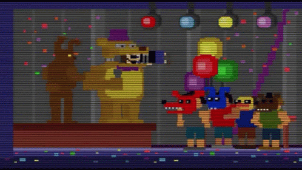

Com o nome desconhecido, crying child foi um membro da familia Afton, morto em 83 por uma "brincadeira" de seu irmão, Michal Afton

Protagonista da maioria dos jogos, filho de William Afton
Michael costumava causar bullyng em seu irmão mais novo, té que ele pegou pesado demais, colocando a criança
na boca de um dos animatronics, Fredbear, quando a pressão acabou quebrando sua cabeça ao meio.
